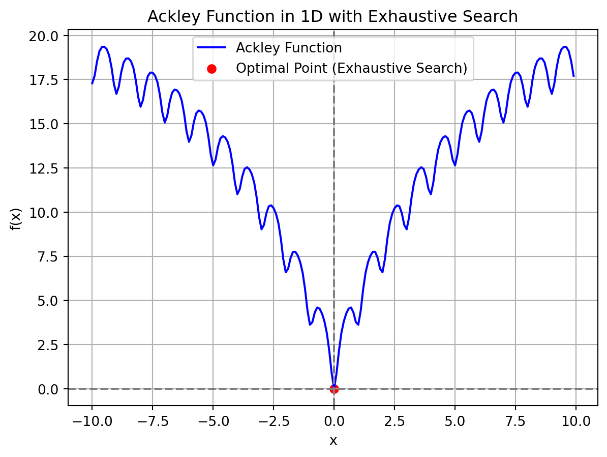

Exhaustive Search
If you had unlimited time to search through every possible hobby in the world, which one do you think you’d end up pursuing?
Exhaustive Search (also known as brute-force search) is a problem-solving technique that systematically enumerates all possible solutions to find the best one.
It evaluates every potential solution against the objective function and selects the optimal one.
When to use: When the problem size is small and when optimality is critical and computation time is feasible.
Limitations: Computationally expensive. Not feasible for large problem spaces due to exponential time complexity.
Advantages and Disadvantages of ES
- Advantages:
- Guaranteed Optimal Solution: Finds the best possible solution, ensuring optimality.
- Simplicity: Easy to understand and implement for small-scale problems.
- Disadvantages:
- Scalability Issues: Infeasible for large datasets due to exponential time complexity.
- Resource Intensive: High computational cost in terms of time and memory.
Exhaustive Search Algorithm
- Check all the candidate solutions in the solution space of the problem in question; therefore, it is always capable of finding the best solution for the problem in question.
Exhaustive Search in Continuous vs. Discrete Domains
- Discrete Domains: Solutions can be explicitly enumerated without discretization.
- Example: Knapsack problem.
- Continuous Domains: Require discretization (using a step size) to make exhaustive search feasible.
- Example: Ackley function.
- Challenges in Continuous Domains:
- Infinite solution space makes direct enumeration impossible.
- Step size is critical for balancing resolution and computational cost.
- Note that Discretization is the process of converting continuous data or variables into discrete categories or bins.
Role of Step Size in Continuous Optimization
Step size in exhaustive search is the distance between consecutive sample points in the search space. A small step size results in a finer grid with higher precision but increases computation time, while a larger step size reduces computation time but may miss optimal solutions.
Why Step Size Matters: Controls the granularity of the search.
- Smaller steps increase resolution but significantly raise computation time.
- Larger steps reduce computational cost but risk missing the optimal solution.
Practical Considerations:
- Optimal step size depends on the problem’s scale and the required precision.
- Trade-off between efficiency and accuracy.
When is Exhaustive Search Practical?
- Discrete Domains:
- Feasible if the solution space is small (manageable number of combinations).
- Guarantees finding the exact optimal solution.
- Continuous Domains:
- Only practical when the domain is small and can be discretized effectively.
- Higher dimensions increase complexity exponentially (curse of dimensionality).
- Discrete Domains:
The Search Strategy of ES
Knapsack Problem Example of ES
- Finding Optimal Subset of Items to Max Value in Knapsack Problem using Exhaustive Search
from itertools import combinations
# Define the items and maximum weight
items = {
"Item 1": {"weight": 3, "value": 4},
"Item 2": {"weight": 4, "value": 5},
"Item 3": {"weight": 7, "value": 10}
}
max_weight = 10
# Exhaustive search function
def knapsack_exhaustive_while(items, max_weight):
best_value = 0
best_combination = []
item_names = list(items.keys()) # Extract item names for combinations
r = 1
while r <= len(items): # Iterating over different combination sizes
combos = list(combinations(item_names, r)) # Generate combinations using keys
i = 0
while i < len(combos): # Iterating over each combination
combo = combos[i]
weight = sum(items[item]['weight'] for item in combo)
value = sum(items[item]['value'] for item in combo)
if weight <= max_weight and value > best_value:
best_value = value
best_combination = combo
i += 1 # Moving to the next combination
r += 1 # Increasing the size of combinations to check
return best_value, best_combination
# Run the exhaustive search knapsack algorithm
best_value, best_combination = knapsack_exhaustive_while(items, max_weight)
# Print results (O)
print(f"Optimal items selected: {', '.join(best_combination)} | "
f"Total Weight: {sum(items[item]['weight'] for item in best_combination)} | "
f"Total Value: {best_value}")Optimal items selected: Item 1, Item 3 | Total Weight: 10 | Total Value: 14- Step 1: Calculate Ratios
- \(wv1 = 4/3 = 1.333\)
- \(wv2 = 5/4 = 1.25\)
- \(wv3 = 10/7 = 1.428571\)
- Step 2: Order by Ratio (High to Low)
- \(wv3\) at \(1.43\)
- \(wv1\) at \(1.333\)
- \(wv2\) at \(1.25\)
- Step 3: Fill the Sack
- Add {7:10 and then 3:4} filled to 10 weight
- Optimal items: ({‘weight’: 3, ‘value’: 4}, {‘weight’: 7, ‘value’: 10}), Total Value: 14
ES with a One Max Problem
Algorithmic Steps of ES
For each binary solution (up to num_bits length), the code evaluates the number of 1’s in its binary representation (which is used as the “fitness” value).
It then finds the solution with the highest number of 1’s (the one with the most bits set to 1).
Import necessary tools: time for timing and matplotlib for plotting results.
Set up run function
- Loop through all possible solutions.
- Evaluate each one and track its fitness.
- Update the best solution as needed.
- Return the best solution and fitness progress.
Define helper functions:
- Transit: Move to the next solution.
- Evaluate: Count the number of 1s in the binary version of the solution (higher is better).
- Determine: Compare fitness in order to track the best solution found so far.
Imports
import time
import matplotlib.pyplot as pltrun_exhaustive_search function
- run_exhaustive_search(num_bits):
- Calculates the total number of possible solutions max_sol is the maximum possible solution, which is \(2^{numbits}\). \(2 ** numbits\): This correctly represents the total number of possible combinations when you have numbits binary bits. For example, if numbits = 3, the possible solutions range from \(000 (0)\) to \(111 (7)\), resulting in \(2^3=8\) solutions.
- Initializes \(s\) is the current solution, initially set to 0.
- Initializes \(best_fitness\) and \(best_solution\) to track the best results.
- Initializes an empty list \(fitness_over_time\) to track the fitness at each step.
# Function for initialization (I)
def init_es(num_bits=10):
max_sol = 2 ** num_bits # Total number of solutions
s = 0 # Step 1: Set the initial solution s = (0)
f_s = evaluate(s) # Step 2: Evaluate initial solution
return s, f_s, max_solHelper Functions
- transit(s): Simply increments the current solution by 1.
# Function for transit (T)
def transit(s):
s += 1
return s- evaluate(s): Evaluates the “fitness” of the solution by counting how many 1’s are present in its binary representation. The more 1’s, the better the solution.
# Function for evaluation (E)
def evaluate(s):
return bin(s).count("1") # Counts the number of 1s in the binary representation of s- determine(fv, v, fs, s): This method checks whether the fitness of the new solution (fv) is greater than the current best fitness (fs). If so, it updates the current best solution and fitness.
# Function for determine (D)
def determine(fv, v, fs, s):
if fv > fs:
fs, s = fv, v
return fs, sMain Loop
A while loop iterates through all possible solutions (represented by s). For each solution s, it calculates the fitness using the evaluate() function.
- For each iteration, the solution is updated (transit method), evaluated (evaluate method), and the best solution is determined (determine method).
- The loop continues until all possible solutions (v from 0 to max_sol) have been evaluated.
fitness is the “fitness” score of the current solution, calculated using evaluate(s) (which counts the number of 1’s in the binary representation of s).
Appends the fitness value to fitness_over_time.
determine() updates fs (fitness) and s (solution) if the new solution (v) has a higher fitness.
If the current solution has a better fitness than the best found so far, it updates the best fitness and solution.
Return Values: Returns fitness_over_time and best_solution after completing the exhaustive search.
# Run function for exhaustive search
def run_exhaustive_search(num_bits=10):
# Initialize using init_es
s, f_s, max_sol = init_es(num_bits)
#Set v = s
best_solution = s
best_fitness = f_s
fitness_over_time = []
# While the termination criterion is not met
while s < max_sol:
# Generate the next solution v = GenNext(v)
v = s
# Evaluate the new solution
f_v = evaluate(v)
# Track fitness over time for plotting
fitness_over_time.append(f_v)
# Print current solution and its fitness: Print command commented out for simplicity because it prints all the comparisons.
#print(f"{f_v} # {v:0{num_bits}b}")
#If f_v is better than f_s, update s = v, f_s = f_v
best_fitness, best_solution = determine(f_v, v, best_fitness, best_solution)
#continued: Move to the next solution
s += 1 # Increment solution
#Returned for Output the best solution
return fitness_over_time, best_solutionMain Execution
- In exhaustive search, the “main execution” often focuses on setting the number of bits because exhaustive search involves systematically evaluating all possible solutions in the search space. When the solutions are represented as binary strings, the number of bits directly determines the size of the search space.
- Why it matters:
- Defining the Search Space: The number of bits defines how many unique binary strings (or configurations) are possible. For \(2^n\) possible combinations. So, by setting the number of bits, you are effectively defining the boundaries of the search space.
- Enumerating All Possibilities: In exhaustive search, the algorithm needs to evaluate every possible configuration to ensure the optimal solution is found. Each unique binary string corresponds to a specific candidate solution, so having the number of bits set enables the algorithm to enumerate all possible configurations.
- Computational Complexity: The number of bits directly affects the computational complexity of exhaustive search. With \(n\) bits, the search space grows exponentially, which is manageable for small \(n\) but quickly becomes infeasible for larger \(n\). By controlling the number of bits, you also control the practical feasibility of the exhaustive search.
Simplicity: Since exhaustive search doesn’t involve complex heuristics or probabilistic methods, setting the number of bits becomes the main task. The rest of the algorithm is straightforward: generate each binary string, evaluate its objective value, and keep track of the best solution.
# Main execution
num_bits = 10 # You can adjust the number of bitsOutput
# Run the exhaustive search and get fitness values
start_time = time.time()
fitness_over_time, best_solution = run_exhaustive_search(num_bits)
end_time = time.time()
execution_time = end_time - start_time # Calculate elapsed time
# Output (O)
print(f"Exhaustive Search One-Max Time elapsed: {execution_time:.6f} seconds") # Print the elapsed time
print(f"# name of the search algorithm: Exhaustive Search")
print(f"# number of bits: {num_bits}")
# Plot the evolution of fitness over time
plt.figure(figsize=(10, 6))
plt.plot(fitness_over_time, label='Fitness over time', color='blue', linewidth=2)
plt.title(f'Exhaustive Search: Fitness Evolution ({num_bits} bits)')
plt.xlabel('Evaluations')
plt.ylabel('Fitness (Number of 1s)')
plt.grid(True)
plt.legend()
plt.show()Exhaustive Search One-Max Time elapsed: 0.001505 seconds
# name of the search algorithm: Exhaustive Search
# number of bits: 10Ackley Function with ES
- Using exhaustive search with the Ackley function guarantees finding the global minimum because this method systematically evaluates every possible solution within a specified range, leaving no part of the search space unexplored. The Ackley function, known for its complex landscape with multiple local minima, has a known global minimum at zero when all inputs are zero, so an exhaustive search will eventually locate it by checking all candidate solutions.
- However, the drawback of exhaustive search is its high computational cost, especially in higher-dimensional spaces. The Ackley function’s input space grows exponentially with each additional dimension, making exhaustive search impractical beyond small problem sizes or low-dimensional cases. The method becomes computationally prohibitive because it must evaluate every point, which leads to a “combinatorial explosion” of possible solutions. This results in high time complexity and resource demands, making exhaustive search impractical for high-dimensional optimization tasks.
- In optimization, a 1D Ackley function is easier to model and solve than a 2D or 3D Ackley function primarily because of the exponential increase in the number of evaluations required as dimensionality rises. In 2D, the search space grows in a quadratic manner, meaning that an exhaustive search requires far fewer evaluations to cover the entire space, making it feasible to locate the global minimum with reasonable computational effort.
- When moving to 3D, however, the search space expands cubically. This additional dimension leads to a significant increase in the number of possible solution points, escalating the computational cost and making exhaustive search much less practical. In optimization, this curse of dimensionality complicates modeling since the function’s landscape becomes more intricate with each added dimension, and finding the global minimum among many potential local minima becomes increasingly challenging. Consequently, optimization techniques that are efficient in 2D may become impractically slow or require adaptation in 3D and beyond.
- The example below simplifies the Ackley function into 1D.
## Ackley Function with Exhaustive Search
import numpy as np
import matplotlib.pyplot as plt
import time
# Ackley function definition
def ackley(x):
a = 20
b = 0.2
c = 2 * np.pi
x = np.array(x)
n = len(x)
term1 = -a * np.exp(-b * np.sqrt(np.sum(x**2) / n))
term2 = -np.exp(np.sum(np.cos(c * x)) / n)
return term1 + term2 + a + np.exp(1)
# Initialization function (I)
def init_es(search_range, step_size=0.1):
s = 0 # Initial solution
f_s = ackley([s]) # Evaluate initial solution
x_values = np.arange(search_range[0], search_range[1], step_size) # Create the search space
return s, f_s, x_values
# Transition function (T)
def T(s, idx, x_values):
return x_values[idx] # Move to the next solution
# Evaluation function (E)
def E(v):
return ackley([v]) # Evaluate the current solution
# Determination function (D)
def D(f_v, v, f_s, s):
if f_v < f_s: # If new solution is better, update
s = v
f_s = f_v
return s, f_s
# Exhaustive search function
def exhaustive_search(search_range, step_size=0.1):
# Initialize using init_es
s, f_s, x_values = init_es(search_range, step_size)
# While the termination criterion is not met
idx = 0
while idx < len(x_values):
# Generate the next solution v using transition (T)
v = T(s, idx, x_values)
# Evaluate the new solution
f_v = E(v)
# Determine if the new solution is better
s, f_s = D(f_v, v, f_s, s)
# Move to the next solution
idx += 1
# Return the best solution found
return s, f_s, x_values
# Main Execution
# Perform exhaustive search with the Ackley function over the range [-10, 10]
start_time = time.time()
optimal_x_exhaustive, optimal_value_exhaustive, x_values = exhaustive_search((-10, 10))
end_time = time.time()
execution_time = end_time - start_time # Calculate elapsed time
# Output (O)
print(f"Optimal x: {optimal_x_exhaustive}")
print(f"Optimal value: {optimal_value_exhaustive}")
print(f"Exhaustive Search Ackley Function Execution time: {execution_time:.6f} seconds")
# Plot the Ackley function and exhaustive search results
y_values = [ackley([x]) for x in x_values]
plt.plot(x_values, y_values, label="Ackley Function", color='b')
plt.scatter([optimal_x_exhaustive], [optimal_value_exhaustive], color='red', label='Optimal Point (Exhaustive Search)')
plt.title("Ackley Function in 1D with Exhaustive Search")
plt.xlabel("x")
plt.ylabel("f(x)")
plt.axhline(0, color='gray', linestyle='--')
plt.axvline(0, color='gray', linestyle='--')
plt.legend()
plt.grid(True)
plt.show()Optimal x: 0
Optimal value: 4.440892098500626e-16
Exhaustive Search Ackley Function Execution time: 0.002004 seconds
- Overall, the output confirms the accuracy and efficiency of the search in this specific case, identifying the minimum accurately in a very short time.
- Optimal x: The search identified \(x=0\) as the value that minimizes the Ackley function at 0. Since the Ackley function’s global minimum is known to occur at zero (specifically, at \(x=0\) for each input variable), this result confirms the function’s minimum in this search.
- Optimal value: This is the computed minimum value of the Ackley function at \(x=0\). This very small number, so close to zero but slightly above due to computational limitations or floating-point precision. It’s effectively zero for practical purposes, indicating the function reached its theoretical minimum.
- Execution time: 0.002003 seconds – The exhaustive search took just over 2 milliseconds to complete. This quick time suggests that the search was likely performed in a low-dimensional space (such as 1D or 2D), where an exhaustive approach can be executed efficiently. In higher dimensions, exhaustive search would generally take significantly longer due to the exponential increase in the number of points to evaluate.
Comparing One Max to Ackley
- Initialization() Function: In an exhaustive search on the Ackley function, a step size is essential because the Ackley function operates in a continuous space, meaning the variables can take any real value within a defined range. The step size determines the resolution of the search, dictating how closely spaced the evaluation points are. A finer step size means more precise exploration of the function’s landscape, potentially identifying the global minimum more accurately, but at the cost of increased computation. Without a defined step size, exhaustive search would theoretically require an infinite number of evaluations, as there are infinitely many points in a continuous space. In contrast, the One Max problem typically operates in a discrete binary space (e.g., binary strings), where each variable can only take values of 0 or 1. This structure doesn’t require a step size, as all possible solutions are already discrete and finite. Each solution is a unique binary string, and the exhaustive search simply evaluates every possible string without needing to subdivide the space further.
- Transition() Function: In the Ackley function, when you define a function like \(T(s, idx, x_values)\) and use return x_values[idx], you are treating the search space as a continuous or discretized array of possible values. Here, x_values is typically a list or array containing the potential values for each variable dimension, and idx simply indexes into this array to retrieve a specific value. Since exhaustive search involves systematically testing all possible values in x_values, there’s no need for incremental addition \((s += 1)\); instead, the function directly retrieves the next possible value at a given index, which is common in continuous or multi-valued spaces. In contrast, the One Max problem is a binary optimization problem where the goal is to maximize the sum of binary values (0s and 1s). The search space consists of binary strings rather than a continuous or finely discretized set. Incrementing \(s\) (like \(s += 1\)) in this context might be used to iterate over binary configurations or to shift values systematically, as each configuration can only be either a 0 or a 1. This incremental approach is necessary in One Max because there is no list of predefined values (like x_values); rather, each binary position in the solution must be systematically altered to generate each possible solution.
- Evaluation() Function: E(v) in the Ackley function evaluates continuous real values for minimization, while bin(s).count(“1”) in the One Max problem evaluates binary integers for maximization. A lower evaluation result from E(v) indicates a better solution in terms of proximity to the global minimum while a higher count of “1”s in bin(s).count(“1”) represents a better solution, as it means the solution is closer to the optimal binary string of all 1s.
- Determine() Function: In one max, we want to maximize. In Ackley, we want to minimize. This affects the determination function: if f_v < f_s (for minimize) vs f_v > f_s (for maximize)
Using AI
- Use the following prompt on a generative AI, like chatGPT, to learn more about the topics covered.
- Concept of Exhaustive Search: Explain, in your own words, what an exhaustive search is and how it systematically explores all possible solutions. Why is this method guaranteed to find the optimal solution?
- Advantages and Limitations: Discuss the advantages and disadvantages of using exhaustive search for solving optimization problems. When would you avoid using it?
- Comparison with Heuristics: Compare exhaustive search with heuristic methods (like greedy algorithms). When would you prioritize optimality over computational efficiency?
- Greedy vs. Exhaustive: Reflect on a problem where you would instinctively use a greedy approach but later realize an exhaustive search would yield a better result. What changed your decision?
- Continuous vs Discrete Domains: Discuss how exhaustive search differs when applied to continuous domains (e.g., Ackley function) versus discrete domains (e.g., knapsack problem). Why does step size matter in continuous optimization?
- Trade-Offs in Optimization: Reflect on a scenario where exhaustive search would be impractical. How would you modify the problem or approach to make it solvable within reasonable time and resources?
- Visualization Insights: How does visualizing the search process (e.g., fitness evolution over time) help in understanding and debugging optimization algorithms?
Conclusions
- Choose exhaustive search for small-scale problems where optimality is critical. Use heuristics for large, complex, or high-dimensional spaces.